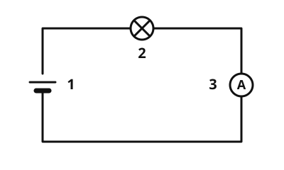
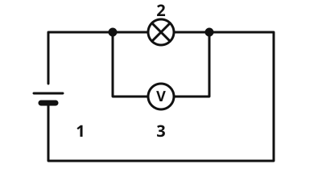
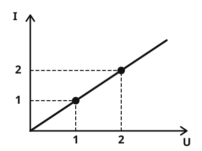
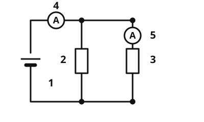

Medienübersicht
Alle Bilder, Audios und Videos dieser App mit ihrer Quelle und ihrer Lizenz.
Bilder

images/stromkreis.svg© CC0-1.0Verwendet auf: Der einfache Stromkreis

images/schaltzeichen.svg© CC0-1.0Verwendet auf: Schalter und Schaltzeichen

images/reihenschaltung.svg© CC0-1.0Verwendet auf: Reihenschaltung

images/parallelschaltung.svg© CC0-1.0Verwendet auf: Parallelschaltung

images/amperemeter.svg© CC0-1.0Verwendet auf: Die Stromstärke

images/voltmeter.svg© CC0-1.0Verwendet auf: Die Spannung

images/kennlinie.svg© CC0-1.0Verwendet auf: Das ohmsche Gesetz

images/reihe-messen.svg© CC0-1.0Verwendet auf: Reihenschaltung mit Messgeräten

images/parallel-messen.svg© CC0-1.0Verwendet auf: Parallelschaltung mit Messgeräten